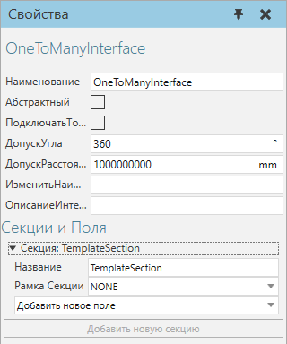

Интерфейс один ко многим |
|
Интерфейс один ко многим позволяет установить соединение с одним или несколькими соответствующими интерфейсами.  Свойства
Типы полейActionПоле Action позволяет отправлять и получать действия, а также подключать клиентов ресурсов, поставщиков и менеджеров. Как правило, поле Action используется при удаленном соединении. ·Action определяет контейнер действий, используемый для управления действиями. ·Connection определяет, как контейнер действий управляет действиями. ·Чтобы отправить действия, выберите Client. ·Чтобы получать действия, выберите Provider. ·Чтобы отправлять и получать действия в другие контейнеры действий, выберите Broker. Примечание: Как правило, сценарий Python используется с контейнерами действий и полями действий для имитации задач и процессов. BaseExportПоле BaseExport позволяет импортировать/экспортировать координаты баз. Например, позиционер робота экспортирует базы установленному роботу, который их импортирует. ·BaseList определяет контейнер баз, используемый для хранения баз. ·Export определяет, будут ли базы импортированы или экспортированы полем. Значение True экспортирует базы. Значение False импортирует базы. IntegerCompatibilityПоле IntegerCompatibility позволяет ограничить соединение, если оно не имеет соответствующего целого числа. Обычно целое число используется в качестве номера модели, чтобы ограничить соединение компонентов друг с другом, если в реальном мире они не могут этого сделать. ·Value определяет целое число, используемое в сравнительном тесте. JointExportПоле JointExport позволяет импортировать/экспортировать информацию о соединениях. Например, позиционер заготовки экспортирует информацию о соединении роботу, который импортирует ее для использования внешних соединений. ·Контроллер определяет контроллер сервопривода/робота для управления совместной информацией. ·Export определяет, будут ли соединения импортироваться или экспортироваться полем. Значение True экспортирует информацию о соединении для любого соединения, на которое ссылается Контроллер. Значение False импортирует информацию о соединении, которая затем определяется как внешнее соединение в контроллере. ProcessorПоле Processor позволяет подключать датчики пути компонента и точки процесса к типу поведения путь. В некоторых случаях конвейер использует интерфейс один ко многим, позволяющий подключать несколько датчиков. Во всех случаях съемный датчик подключается к пути с помощью команды PnP. Местоположение датчика на пути можно проверить в свойстве расстояния датчика или в родительской системе координат. То есть путь является Родителем к датчику, который является Дочерним. ·Path определяет поведение, которое может содержать съемные датчики. Тип поведения должен являться путем. Если Parent имеет значение False, то Path отключен. ·Sensor определяет путь к компоненту или датчик точки процесса, который присоединяется к пути в другом компоненте. Если Parent имеет значение True, сенсор отключен. ·Parent определяет отношение поля. Значение True означает, что поле поддерживает вложения в Path. Значение False означает, что поле поддерживает присоединение датчика к пути другого компонента. RslПоле Rsl позволяет импортировать/экспортировать программу исполнителя робота для удаленного вызова подпрограмм. Как правило, поле Rsl используется в удаленном соединении. ·Publish определяет, экспортирует ли поле программу исполнителя робота. Значение True означает, что другие роботы могут читать и выполнять подпрограммы в программе. Значение False означает, что другие роботы не могут читать или выполнять подпрограммы в программе. ·Subscribe определяет, импортирует ли поле программу исполнителя робота. Значение True означает, что робот может читать и выполнять подпрограммы в других программах. Значение False означает, что робот не может читать или выполнять подпрограммы в других программах. Примечание: Сценарии Python часто используются для вызова подпрограмм, а также для создания пользовательских операторов в программе робота, тем самым устраняя необходимость в полях Rsl. SignalПоле Signal позволяет подключать и отображать сигналы. Например, поле Signal можно использовать для сопоставления сигнала с элементом в соединении с ПЛК (удаленное соединение) или сигнала в смонтированном инструменте с системой ввода-вывода робота (физическое соединение). ·Сигнал определяет поведение, используемое полем. Поведение должно быть типом сигнал. ·Connection определяет, как интерфейс может быть подключен. Его можно использовать для ограничения нежелательных подключений пользователя. ·Normal означает, что сигнал может соединяться с другим сигналом. ·Begin означает, что сигнал может соединяться с другим сигналом, имеющим связь End. ·End означает, что сигнал может соединяться с другим сигналом, имеющим связь Begin. ToolExportПоле ToolExport позволяет импортировать/экспортировать системы координат инструментов. Например, инструмент, установленный на роботе, будет экспортировать СК инструментов, а робот будет импортировать их для использования в качестве TCP. ·ToolList определяет контейнер инструментов, используемый для хранения СК инструментов. ·Export определяет, будут ли СК инструментов импортированы или экспортированы полем. Значение True экспортирует СК инструментов. Значение False импортирует СК инструментов. TransportПоле Transport позволяет отправлять и получать транспортные задачи. Транспортный протокол использует сигнал для получения информации, поэтому поле Transport используется в основном для обмена данными (какой компонент забрать, место получения, принимающий компонент, место выгрузки). ·Transport определяет транспортный протокол, используемый полем. ·Connection определяет, как транспорт используется полем. ·Для получения транспортных задач выберите Input. ·Для отправки транспортных задач выберите Output. ·Для отправки и получения транспортных задач выберите Input and Output. |